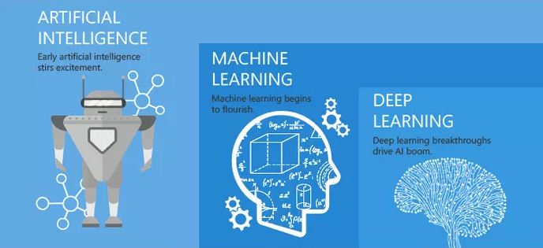

本文教你如何选择合适自己的机器学习算法。

分类
逻辑斯蒂回归（Logistic regression）
属于判别式模型，有很多正则化模型的方法（L0，L1，L2，etc），而且你不必像在用朴素贝叶斯那样担心你的特征是否相关。与决策树与SVM机相比，你还会得到一个不错的概率解释，你甚至可以轻松地利用新数据来更新模型（使用在线梯度下降算法，onlinegradientdescent）。如果你需要一个概率架构（比如，简单地调节分类阈值，指明不确定性，或者是要获得置信区间），或者你希望以后将更多的训练数据快速整合到模型中去，那么使用它吧。
优点
- 实现简单，广泛的应用于工业问题上；
- 分类时计算量非常小，速度很快，存储资源低；
- 便利的观测样本概率分数；
- 对逻辑回归而言，多重共线性并不是问题，它可以结合L2正则化来解决该问题；
表现最好：当特征没有相关性，最终分类结果是线性的，且特征维度远小于数据量的时候效果好。
缺点
- 当特征空间很大时，逻辑回归的性能不是很好；
- 容易欠拟合，一般准确度不太高
- 不能很好地处理大量多类特征或变量；
- 只能处理两分类问题（在此基础上衍生出来的softmax可以用于多分类），且必须线性可分；
- 对于非线性特征，需要进行转换；
表现最差：当特征相关性比较强时，表现会很差。
链接
朴素贝叶斯（Naive Bayes）
朴素贝叶斯属于生成式模型（关于生成模型和判别式模型，主要还是在于是否是要求联合分布），非常简单，你只是做了一堆计数。如果注有条件独立性假设（一个比较严格的条件），朴素贝叶斯分类器的收敛速度将快于判别模型，如逻辑回归，所以你只需要较少的训练数据即可。即使NB条件独立假设不成立，NB分类器在实践中仍然表现的很出色。它的主要缺点是它不能学习特征间的相互作用，用mRMR中R来讲，就是特征冗余。引用一个比较经典的例子，比如，虽然你喜欢BradPitt和TomCruise的电影，但是它不能学习出你不喜欢他们在一起演的电影。
优点
- 朴素贝叶斯模型发源于古典数学理论，有着坚实的数学基础，以及稳定的分类效率。
- 对小规模的数据表现很好，能个处理多分类任务，适合增量式训练。
- 对缺失数据不太敏感，算法也比较简单，常用于文本分类。
缺点
- 需要计算先验概率；
- 分类决策存在错误率；
- 对输入数据的表达形式很敏感。
链接
最近邻算法（KNN）
其主要过程为：
- 计算训练样本和测试样本中每个样本点的距离（常见的距离度量有欧式距离，马氏距离等）；
- 对上面所有的距离值进行排序；
- 选前k个最小距离的样本；
- 根据这k个样本的标签进行投票，得到最后的分类类别；
如何选择一个最佳的K值，这取决于数据。一般情况下，在分类时较大的K值能够减小噪声的影响。但会使类别之间的界限变得模糊。一个较好的K值可通过各种启发式技术来获取，比如，交叉验证。另外噪声和非相关性特征向量的存在会使K近邻算法的准确性减小。
近邻算法具有较强的一致性结果。随着数据趋于无限，算法保证错误率不会超过贝叶斯算法错误率的两倍。对于一些好的K值，K近邻保证错误率不会超过贝叶斯理论误差率。优点
- 理论成熟，思想简单，既可以用来做分类也可以用来做回归；
- 可用于非线性分类；
- 训练时间复杂度为O(n)；
- 对数据没有假设，准确度高，对outlier不敏感
缺点
- 计算量大；
- 样本不平衡问题（即有些类别的样本数量很多，而其它样本的数量很少）；
- 需要大量的内存；
支持向量机（SVM）
支持向量机使用一个名为核函数的技巧，来将非线性问题变换为线性问题，其本质是计算两个观测数据的距离。支持向量机算法所寻找的是能够最大化样本间隔的决策边界，因此又被称为大间距分类器。
举例来说，使用线性核函数的支持向量机类似于逻辑回归，但更具稳健性。因而在实践中，支持向量机最大用处是用非线性核函数来对非线性决策边界进行建模。优点
- 支持向量机能对非线性决策边界建模，又有许多可选的核函数。在面对过拟合时，支持向量机有着极强的稳健性，尤其是在高维空间中。
缺点
- 不过，支持向量机是内存密集型算法，选择正确的核函数就需要相当的j技巧，不太适用较大的数据集。在当前的业界应用中，随机森林的表现往往要优于支持向量机。
链接

决策树（Decision tree）
易于解释。它可以毫无压力地处理特征间的交互关系并且是非参数化的，因此你不必担心异常值或者数据是否线性可分（举个例子，决策树能轻松处理好类别A在某个特征维度x的末端，类别B在中间，然后类别A又出现在特征维度x前端的情况）。它的缺点之一就是不支持在线学习，于是在新样本到来后，决策树需要全部重建。另一个缺点就是容易出现过拟合，但这也就是诸如随机森林RF（或提升树boostedtree）之类的集成方法的切入点。另外，随机森林经常是很多分类问题的赢家（通常比支持向量机好上那么一丁点），它训练快速并且可调，同时你无须担心要像支持向量机那样调一大堆参数，所以在以前都一直很受欢迎。
决策树中很重要的一点就是选择一个属性进行分枝，因此要注意一下信息增益的计算公式，并深入理解它。优点
- 计算简单，易于理解，可解释性强；
- 比较适合处理有缺失属性的样本；
- 能够处理不相关的特征；
- 在相对短的时间内能够对大型数据源做出可行且效果良好的结果。
缺点
- 容易发生过拟合（随机森林可以很大程度上减少过拟合）；
- 忽略了数据之间的相关性；
- 对于那些各类别样本数量不一致的数据，在决策树当中,信息增益的结果偏向于那些具有更多数值的特征（只要是使用了信息增益，都有这个缺点，如RF）。

随机森林（Random Forests）
集成的方法，如随机森林（RF）或梯度提升树（GBM），则能结合许多独立训练树的预测。我们在这里不会详述其中的机制，但在实践中，随机森林一般都有很出色的表现，梯度提升树则较难调参，但往往能有更高的性能上限。
优点
- 在数据集上表现良好，两个随机性的引入，使得随机森林不容易陷入过拟合。
- 在当前的很多数据集上，相对其他算法有着很大的优势，两个随机性的引入，使得随机森林具有很好的抗噪声能力。
- 它能够处理很高维度（feature很多）的数据，并且不用做特征选择，对数据集的适应能力强：既能处理离散型数据，也能处理连续型数据，数据集无需规范化。
- 在创建随机森林的时候，对generlization error使用的是无偏估计。
- 训练速度快，可以得到变量重要性排序。
- 在训练过程中，能够检测到feature间的互相影响。
- 容易做成并行化方法。
- 实现比较简单
缺点
- 由于无约束，单棵树容易过拟合，这是因为单棵树可保留分支直至记住训练的数据。不够，集成方法可以弱化这一缺点。
链接

深度学习（DL）
深度学习是指能够学习极端复杂模式的多层神经网络。它们在输入层和输出层之间使用隐藏层来对数据的中间表征建模，这一点是其他算法很难做到的。
深度学习还有几个重要的机制，如卷积、漏失等，这使该算法可以有效学习高维数据。然而，相对于其他算法，深度学习需要更多的数据来进行训练，因为该模型需要估算更大数量级的参数。优点
深度学习是当前特定领域的最先进技术，如计算机视觉与语音识别。深度神经网络在图像、音频和文本数据上表现优异，也很容易通过反向传播算法来更新数据模型。它们的架构（即层级的数量和结构）能适用于多种问题，同时隐藏层还能降低算法对特征工程的依赖。
缺点
深度学习算法往往不适合用于通用目的，因为它们需要大量的数据。事实上，对于经典的机器学习问题，深度学习的表现并不比集成方法好。此外，由于训练所需的密集型计算，它们需要更多的专门知识才能进行调参（如设定架构与超参数）。
链接
聚类
K均值（K-means）
K 均值是基于样本点间的几何距离来度量聚类的通用目的算法。由于集群围绕在聚类中心，结果会接近于球状并具有相似的大小。
我们之所以推荐该算法给初学者，是因为它不仅足够简单，而且足够灵活，对于大多数问题都能给出合理的结果。优点
- K均值是最为流行的聚类算法，因为它足够快速、足够简单，如果你的预处理数据和特征工程都做得十分有效，那它将具备令人惊叹的灵活性。
缺点
- 该算法需要指定集群的数量，而 K 值的选择通常都不是那么容易确定的。另外，如果训练数据中的真实集群并不是类球状的，那么 K 均值聚类会得出一些比较差的集群。
链接
仿射传播（Affinity Propagation）
仿射传播是一种相对较新的聚类算法，它基于两个样本点之间的图形距离来确定集群，其结果倾向于更小且大小不等的集群。
优点
- 仿射传播不需要指出明确的集群数量，但需要指定“sample preference”和“damping”等超参数。
缺点
- 仿射传播的主要缺点是训练速度较慢，且需要大量内存，因而难于扩展到大数据集。此外，该算法同样在假定潜在的集群要接近于球状。
链接
层次聚类（Hierarchical clustering）
其算法基于以下概念来实现：
- 每一个集群都从一个数据点开始；
- 每一个集群都可基于相同的标准进行合并；
- 重复这一过程，直至你仅剩下一个集群，这就获得了集群的层次结构。
优点
- 层次聚类的最主要优点，是集群不再假定为类球形。此外，它可以很容易扩展到大数据集。
缺点
- 类似于 K 均值，该算法需要选定集群的数量，即算法完成后所要保留的层次。
DBSCAN
DBSCAN 是一种基于密度的聚类算法，它将样本点的密集区域组成集群；其最新进展是HDBSCAN，它允许集群的密度可变。
优点
- DBSCAN 不需要假定类球形集群，其性能可以扩展。此外，它不需要每个点都被分配到集群中，这就降低了集群的噪音。
缺点
- 用户必须要调整“epsilon”和“min_sample”这两个超参数来定义集群密度。DBSCAN 对此非常敏感。
链接
回归
线性回归（Linear regression）
线性回归是回归任务最常用的算法。它最简的形式，是用一个连续的超平面来拟合数据集（比如，当你仅有两个变量时就用一条直线）。如果数据集内的变量存在线性关系，拟合程度就相当高。
在实践中，简单线性回归通常会被其正则化形式（LASSO、Ridge 及弹性网络）所取代。正则化是对过多回归系数所采取的一种避免过拟合的惩罚技巧，同时，惩罚的强度需要被平衡好。优点
- 线性回归的理解和解释都非常直观，还能通过正则化来避免过拟合。此外，线性模型很容易通过随机梯度下降来更新数据模型。
缺点
- 线性回归在处理非线性关系时非常糟糕，在识别复杂的模式上也不够灵活，而添加正确的相互作用项或多项式又极为棘手且耗时。
链接
降维
特征选取与特征提取的关键区别在于：特征选取是从原特征集中选取一个子特征集，而特称提取则是在原特征集的基础上重新构造出一些(一个或多个)全新的特征。
方差阈值（Variance Threshold）
- 方差阈值会摒弃掉观测样本那些观测值改变较小的特征(即，它们的方差小于某个设定的阈值)。这样的特征的价值极小。
- 举例来说，如果你有一份公共健康数据，其中96%的人都是35岁的男性，那么去掉“年龄”和“性别”的特征也不会损失重要信息。
- 由于方差阈值依赖于特征值的数量级，你应该对特征值先做归一化处理。
优点
使用方差阈值方式进行数据降维只需一个非常可靠的直觉：特征值不怎么改变的特征，不会带来什么有用的信息。这是在你建模初期进行数据降维相对安全的一种方式。
缺点
如果你正在解决的问题并不需要进行数据降维，即便使用了方差阈值也几乎没有什么作用。此外，你需要手工设置、调整方差阈值，这个过程相当具有技术含量。我们建议从一个保守(也就是，较低)的阈值开始。
链接
相关性阈值
- 相关性阈值会去掉那些高度相关的特征(亦即，这些特征的特征值变化与其他特征非常相似)。它们提供的是冗余信息。
- 举例来说，如果你有一个房地产数据，其中两个特征分别是“房屋面积（单位：平方英尺）”和“房屋面积（单位：平方米）”，那么，你就可以去掉其中的任何一个（这非常安全，也不会给你的模型带来任何负面影响）。
- 问题是，你该去掉哪一个特征呢？首先，你应该计算所有特征对的相关系数。而后，如果某个特征对的相关系数大于设定的阈值，那你就可以去掉其中平均绝对相关系数较大的那一个。
优点
使用相关性阈值同样只需一个可靠的直觉：相似的特征提供了冗余的信息。对于某些含有强相关性特征较多的数据集，有些算法的稳健性并不好，因此，去掉它们可以提升整个模型的性能(计算速度、模型准确度、模型稳健性，等等)。
缺点
同样，你还是必须手动去设置、调整相关性阈值，这同样是个棘手且复杂的过程。此外，如果你设置的阈值过低，那么你将会丢失掉一些有用的信息。无论在什么时候，我们都更倾向于使用那些内置了特征选取的算法。对于没有内置特征提取的算法，主成分分析是一个很好的备用方案。
链接
遗传算法（GA）
遗传算法是可用于不同任务的一大类算法的统称。它们受进化生物学与自然选择的启发，结合变异与交叉，在解空间内进行高效的遍历搜索。
在机器学习领域，遗传算法主要有两大用处。
- 用于最优化，比如去找神经网络的最佳权重。
- 是用于监督式特征提取。
这一用例中，“基因”表示单个特征，同时“有机体”表示候选特征集。“种群体”内的每一个有机体都会基于其适应性进行评分，正如在测试数据集上进行模型性能测试。最能适应环境的有机体将会生存下来，并不断繁衍，一直迭代，直至最终收敛于某个最优的解决方案。优点
在穷举搜索不可行的情况下，对高维数据集使用遗传算法会相当有效。当你的算法需要预处理数据却没有内置的特征选取机制(如最近邻分类算法），而你又必须保留最原始的特征(也就是不能用任何主成分分析算法)，遗传算法就成了你最好的选择。这一情况在要求透明、可解释方案的商业环境下时有发生。
缺点
遗传算法为你解决方案的实施带来了更高的复杂度，而多数情况下它们都是不必要的麻烦。如果可能的话，主成分分析或其它内置特征选取的算法将会更加高效和简洁。
链接
主成分分析（PCA）
主成分分析是一个非监督式算法，它用来创造原始特征的线性组合。新创造出来的特征他们之间都是正交的，也就是没有关联性。具体来说，这些新特征是按它们本身变化程度的大小来进行排列的。第一个主成分代表了你的数据集中变化最为剧烈的特征，第二个主成分代表了变化程度排在第二位的特征，以此类推。
因此，你可以通过限制使用主成分的个数来达到数据降维的目的。例如，你可以仅采用能使累积可解释方差为90%的主成分数量。
你需要在使用主成分分析之前，对数据进行归一化处理。否则，原始数据中特征值数量级最大的那个特征将会主导你新创造出来的主成分特征。优点
主成分分析是一项多用途技术，实用效果非常好。它部署起来快速、简单，也就是说，你可以很方便地测试算法性能，无论使用还是不使用主成分分析。此外，主成分分析还有好几种变体和扩展(如：核主成分分析(kernel PCA)，稀疏主成分分析(sparse PCA))，用以解决特定的问题。
缺点
新创造出来的主成分并不具备可解释性，因而在某些情况下，新特征与应用实际场景之间很难建立起联系。此外，你仍然需要手动设置、调整累积可解释方差的阈值。
链接

线性判别分析（LDA）
- 线性判别分析不是隐含狄利克雷分布，它同样用来构造原始特征集的线性组合。但与主成分分析不同，线性判别分析不会最大化可解释方差，而是最大化类别间的分离程度。
- 因此，线性判别分析是一种监督式学习方式，它必须使用有标记的数据集。那么，线性判别分析与主成分分析，到底哪种方法更好呢？这要视具体的情况而定，“没有免费的午餐”原理在这里同样适用。
- 线性判别分析同样依赖于特征值的数量级，你同样需要先对特征值做归一化处理。
优点
线性判别分析是一种监督式学习，基于这种方式获取到的特征可以(但并不总是能)提升模型性能。此外，线性判别分析还有一些变体(如二次线性判别分析)，可用来解决特定的问题。
缺点
与主成分分析一样，新创造出来的特征不具有可解释性。而且，你同样要手动设置、调整需要保留的特征数量。线性判别分析需要已经标记好的数据，因此，这也让它更加接地气儿。
链接

自编码机
- 自编码机是一种人工神经网络，它是用来重新构建原始输入的。例如，图像自编码机是训练来重新表征原始数据的，而非用以区分图片里面的小猫、小狗。
- 但这有用吗？这里的关键，是在隐含层搭建比输入层和输出层更少数量的神经元。这样，隐含层就会不断学习如何用更少的特征来表征原始图像。
- 因为是用输入图像来作为目标输出，自编码机被视为无监督学习。它们可被直接使用（如：图像压缩）或按顺序堆叠使用（如：深度学习）。
优点
自编码机是人工神经网络中的一种，这表示它们对某些特定类型的数据表现会非常好，比如图像和语音数据。
缺点
自编码机是一种人工神经网络。这就是说，它们的优化需要更多的数据来进行训练。它们并不能作为一般意义上的数据降维算法来用。
链接